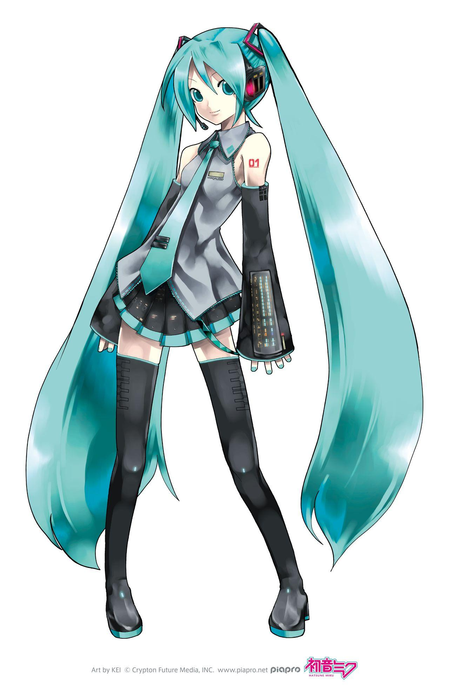
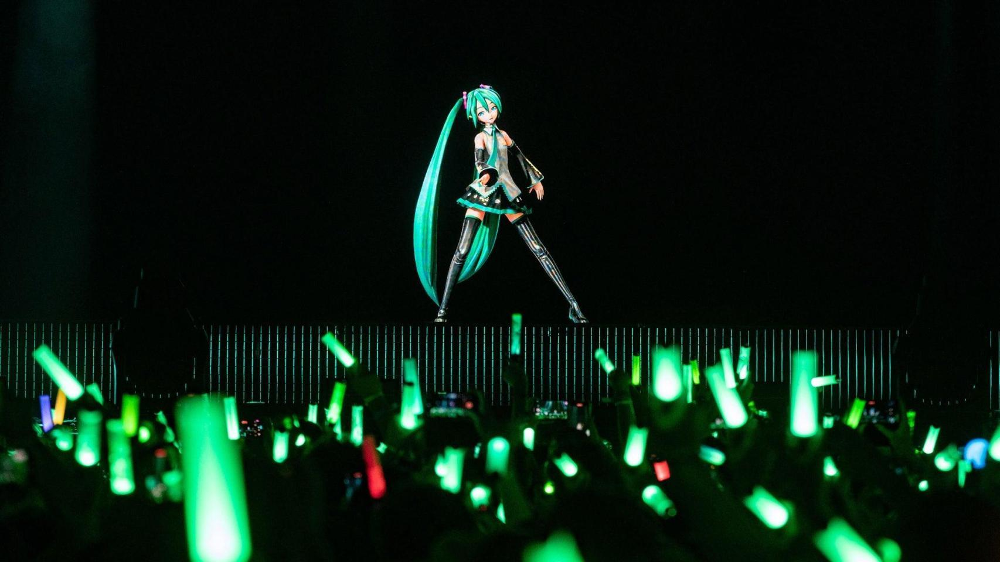

Who is Hatsune Miku
Created with ChatGPT and Canva

Hatsune Miku is a virtual singer created by the Japanese company Crypton Future Media in 2007. She isn't a real person—she's a character whose singing voice is generated using Vocaloid voice synthesis software.Her most recognizable features are: Long turquoise twin-tails Futuristic outfit with a gray sleeveless top, black skirt, and teal accents A cheerful, energetic personality (though fans often interpret her in many different ways)
What makes Hatsune Miku unique is that fans create her music. Producers write songs, program her vocals, and share their work online. Thousands of original songs have been made in genres ranging from pop and rock to electronic music and even classical.
